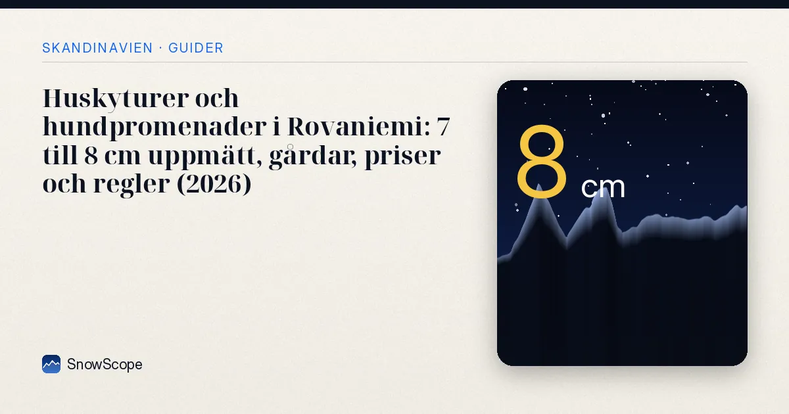

Huskyturer och hundpromenader i Rovaniemi: 7 till 8 cm uppmätt, gårdar, priser och regler (2026)
Rovaniemi väcktes av sin första ordentliga snö den 13 november. Vädersstationen vid flygplatsen på 186 m uppmätte 7 cm, medan den lägre stationen vid Apukka, öst om staden på 105 m, mätte 8 cm. Efter bar mark under hela första veckan i november har snötäcket hållit sig tunt men stadigt, och staden öppnade sitt första vinterskidspår, 450 m långt, samma dag. För huskybönderna längs vägen söder om stad markerar detta det ögonblick då karvagnsåkningar ger vika för slädbeskningar.
Se snöprognosen för Rovaniemi live i SnowScope-appenSnödjup, pudervarningar och 3D-kartan, gratis.

När bönderna startar och vad de tar betalt
Tre av Rovaniemis huskyoperatörer publicerar öppetider och priser öppet. Bearhill Husky erbjuder själv-körda slädsafaris från den 30 november 2026 och framåt; en familjetour på ungefär 6–10 km, med cirka 45 minuters körning av ditt eget hundlag, kostar från 196 EUR. Raitola, som också håller renar, erbjuder en guiderad 5 km husky-safari från december till mitten av april, som varar ungefär en timme, för 144 EUR per vuxen. Arctic Circle Husky Park erbjuder korta besök med en 1 km åkning för 75 EUR per vuxen.
Före den officiella slädsäsongen erbjuder många gårdar fortfarande karvagnsåkningar eller kortare åkningar där en professionell musher hanterar hundlaget. Om du planerar en resa i slutet av november, fråga vilken form gården kommer att använda; med bara 7–8 cm på marken kan vissa dagar fortfarande betyda karvagnsåkningar i stället för slädåkningar. Tidig vintersnö kan förändras med vädret, så bekräfta ett par dagar innan du bokar.
Dagsljuset krymper snabbt vid polcirkeln
Rovaniemi ligger på polcirkeln, och dagslängden minskar kraftigt i november och december. Den 15 november gick solen upp i 5 timmar 43 minuter. Den 30 november stiger den över horisonten i under 4 timmar. I december stiger solen nästan inte alls.
Om du vill se det snöklädda landskapet och skogen, boka din gårdtur för sent på förmiddagen eller mitt på dagen. Många av de upplysta motionsspåren runt stad är bra för hundpromenader i mörker, men de är inte lämpliga för husky-åkningar. Skidspåren, när de är helt öppna, kommer också att vara upplysta, även om hundar inte är tillåtna på dem.
Regler för hundar i snö och skog
Finlands allemansrätt ger fotgängare bred frihet, men hundar har särskilda regler. I bebyggda områden måste hundar vara snörad året runt. På landsbygden gäller snörkregeln från den 1 mars till den 19 augusti, så just nu kan din hund springer fritt utan snöre om du har tillåtelse att vara där. Inom skyddade områden som nationalparker måste du alltid snöra din hund.
Rovaniemi är renarnas land. Att närma sig renar med en hund—även för ett fotografi—är förbjudet och kan skrämma hjorden. Respektera barriärer och varningsskyltar längs vägar där hjordarna korsar.
Där du kan låta din hund springa säkert
Staden har två inhägnade hundparker där din hund kan leka snörlös utan att behöva oroa sig för trafik eller renar. Lainaanpuisto har nattbelysning, vilket är användbart under de mörka veckorna. Ounasrinne ligger i en skogsmiljö och tilltalar hundar som gillar träd och skugga.
Hundar är inte tillåtna på de preparerade skidspåren som sträcker sig över regionen. Regeln gäller också för fotgängare: när spåren är helt öppna, håll dig borta från dem så att skidåkare har en klar väg. Några av stadens motionsspår är upplysta och tillräckligt breda för både hundar och vintervandrare, så använd dem i stället.
Kläder för minusgrader
Tidig vintersnö kommer ofta tillsammans med kall luft, och Rovaniemis läge gör att vintertemperaturerna sjunker snabbt och stannar låga. Korta hårda hundar frys precis som människor. Om du går promenad med din egen hund på vägar eller i stan, bör du överväga en hunddräkt för temperaturer under nollpunkten.
Salt och grus som läggs på gator i stan kan irritera tassorna. Skölj din hunds tassar efter en promenad på saltad mark, eller använd en tassstation om staden installerar en. Långhåriga raser klarar sig bättre i kylan, men även de behöver skydd och värme när de kommer in.
Tips för skidåkare
- Boka din gårdtur ett par dagar i förväg och bekräfta formatet: vagn eller släde. Med 7–8 cm på marken kan väderbytena påverka vilket som används.
- Om du besöker i slutet av november, planera gårdbesök mitt på dagen när det fortfarande är dagsljus att se snön och träden.
- Använd de två inhägnade hundhundparkerna—Lainaanpuisto (upplysta) och Ounasrinne (skog)—för att låta din hund springa fri utan risk för renarnas hjord eller trafik.
- Håll din egen hund snörad i bebyggda områden hela året, och nära eventuella renmarkeringar eller barriärer. Nationalparker och skyddade områden kräver också snöre.
- Ta med en hunddräkt för temperaturer under nollpunkten och skölj din hunds tassar efter promenader på saltade stadsgator.
Om siffrorna
Snödjupen för skidorterna är det djupaste snötäcket på ortens övre backar på det angivna datumet; de är uppskattningar för ett område, inte en mätning på en punkt. Prognoser kan ändras. Läs alltid den officiella lavinprognosen innan du åker offpist.
Citera den här rapporten
För forskning, undervisning eller press: siffrorna och diagrammen får återanvändas fritt under CC BY 4.0 med den här källhänvisningen.
SnowScope (2026), Huskyturer och hundpromenader i Rovaniemi: 7 till 8 cm uppmätt, gårdar, priser och regler (2026), https://snowscope.app/blog/sv/2026/11/rovaniemi-husky-rides-dog-walks-snow-guide-2026.html, hämtad 2026-11-14
SnowScope (Atlas Labs). (2026, November 14). Huskyturer och hundpromenader i Rovaniemi: 7 till 8 cm uppmätt, gårdar, priser och regler (2026). SnowScope snow reports. https://snowscope.app/blog/sv/2026/11/rovaniemi-husky-rides-dog-walks-snow-guide-2026.html
BibTeX
@misc{snowscope2026rovaniemihuskyridesdogwa,
author = {{SnowScope (Atlas Labs)}},
title = {Huskyturer och hundpromenader i Rovaniemi: 7 till 8 cm uppmätt, gårdar, priser och regler (2026)},
year = {2026},
month = nov,
howpublished = {\url{https://snowscope.app/blog/sv/2026/11/rovaniemi-husky-rides-dog-walks-snow-guide-2026.html}},
note = {Published 2026-11-14 19:39 UTC; accessed 2026-11-14}
}· CC BY 4.0 · Metoder, data och verktyg →
Följ Rovaniemi
Gratis: ett meddelande när nysnö är på väg, och prognosen varje morgon.